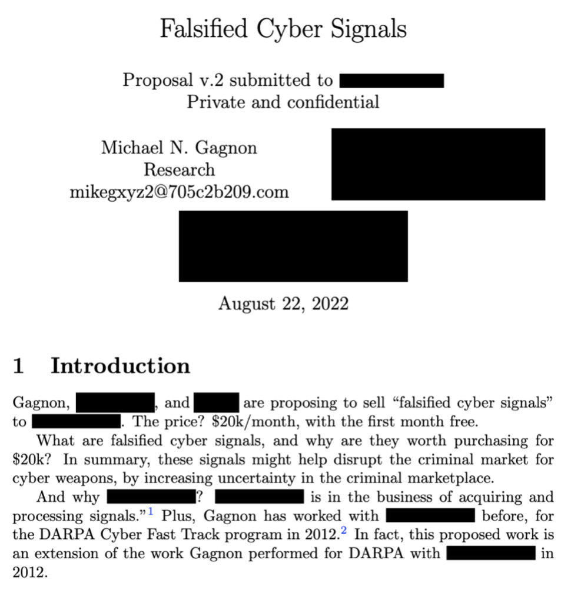
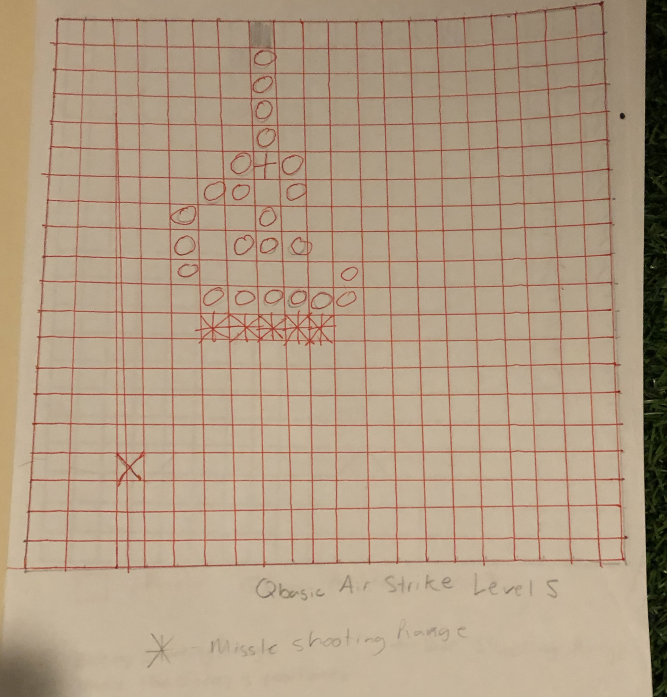

ALT text goes here? I don't know if alt-text readers display 'visually hidden' CSS.
Gluon Spoiler
February 10, 2023
https://zipditto.com
https://gmike.substack.com

(QR code for this page)

Preface
Please allow me to attempt to capture your attention. We begin with a photograph of a gigababe and a gigadude.

This book, “Gluon Spoiler,” is a spoiler for the book Deluxe Beer Garden because it resolves the mysteries I sewed into DBG.
Gluon Spoiler also spoils many other mysterious books I have written. Herein, I simply make my intellectual canon as clear as possible, by providing entertaining references to my other books.
On with the entertainment!
I have a master’s degree from Harvard. I photoshopped the photo for my student ID, before I submitted it. Lol!

I claimed to be involved in espionage in my book Deluxe Beer Garden and other books, too.
I was the student speaker at GMU’s Engineering School’s convocation ceremony in 2007.

I was an Associate Staff member at MIT Lincoln Laboratory (LL).

I once hacked the United States nuclear-warfare defense system, during a live-fire war game (ZBG 219).
Proof that the war game was live fire: see pages 20 and 34 of MIT Lincoln Laboratory's 2010 report.
I authored an unclassified report on that war game titled Towards Net-Centric Cyber Survivability for Ballistic Missile Defense.
I presented my report on the live-fire war game in Prague, in 2010 (ZBG 219). To prepare for the trip to Prague I received some SERE training (Survival, Evasion, Resistance, Escape, ZBG 219). The trip to Prague doubled as my honeymoon. Here are some photos from my honeymoon.


Anyway, I printed Zen Beer Garden, Draft 1 (the only draft) in December 2020. I printed Deluxe Beer Garden about a month later, which essentially represents the second draft of Zen Beer Garden.
Then, about a year later, I condensed it, made it much more fictional, and published it as a highly fictional version, titled Mutually Assured Espionage.
You can also purchase a high-quality, hardcover, collector’s edition at Lulu.com!

Anyway, you might be wondering what MIT has to do with espionage and live-fire nuclear war games. I shall explain it clearly now (it’s been an open secret for a long time).
Early in the Cold War the US Military and Congress collaborated to establish new private organizations controlled funded by the Federal Government and US Military. They are known as FFRDC’s (Federally Funded Research & Development Centers). Lincoln Laboratory (LL) is an FFRDC within MIT. LL is physically located within an Air Force base about 20 minutes north of MIT’s main campus.
I first began doing counter-terrorism work at another FFRDC, called IDA, the Institute for Defense Analyses, as an intern during college. Here’s proof:

Anyway, ZBG and DBG is old news. That was years ago.
What have I been doing lately? Well, I’ve been dabbling in international arms dealing.
But, to explain my role in international arms dealing, I must first tell you a little bit about my research that began at MIT, continued at Harvard, matured for DARPA, then simmered for 10 years in Buddhism.
For MIT, Harvard, and DARPA, I studied and practiced the offense and defense of computer overloads, specializing in “high-density attacks”.
Then, I studied and practiced Buddhism, and realized you can treat human brains as if they were computers, and I studied and practiced the offense and defense of “brain overloads.”
Good news: I believe my latest defensive technique succeeds at protecting human brains. I call it the Zen Lemonade Garden, and you can read about it in my book Magic & Rationality, for free on the Web.
Also, you can buy a paperback draft on Lulu.com. I am donating 20% of my personal 2023 revenue from all book sales to the Electronic Frontier Foundation (EFF) and the ACLU (American Civil Liberties Union.)
Anyway, last year (2022), I submitted a business proposal to an employee at a large corporation to fund me to develop fake cyber weapons.
The concept was that the fake weapons would be advertised on criminal markets to fuck with people who were trying to fuck with America.
But, here’s the catch. I’ve been playing all sides, all along, and this is where proof-of-work steganography comes in handy: I can prove I’ve been playing all sides, all along by helping you “decrypt” my intellectual canon (proof-of-work steganography).
First, I provide some evidence I’ve been dabbling in international arms dealing, then I give some references that help prove I’ve been playing all sides, all along, then I share my motivation for playing all sides, all along.
First, here’s some evidence I’ve been dabbling in international arms dealing. It’s written in coded language.

Now, I will give some references that help prove I’ve been playing all sides, all along, and share my motivation for playing all sides, all along.
I am Buddhist. Been so for 10 years. I’ve published two books on Buddhism, plus a little booklet.
My book on introductory Buddhism is titled Auspicious Doubt, and you guessed it, you can read it for free, or you can buy a print copy.
My more advanced book on Buddhism is highly complex. It is titled The Tau of Buddhism.
My little booklet is titled The World According to Kindergarten Gems, and is a quick read.
“There is no doubt that the Heart Sutra is the most frequently used and recited text in the entire mahayana Buddhist tradition,” according to Tibetan Buddhist translator Karl Brunnhölz.
This book is my reinterpretation of the Heart Sutra. It is about the Buddhist concept of “emptiness.”
Here is a video I spontaneously recorded last night for a lover, where I introduced her to the book. I wasn’t planning on publishing the video when I
recorded it, but I changed my
mind.
Also, you can purchase a premium hardcover at Lulu.com
for $19.25.
The back cover of my little booklet contains a prayer:

What does Buddhism have to do with playing all sides, all along?
Well, one of the fundamental theses of Buddhism is that everyone deserves compassion.
In my novella The Gentle Way of War, I describe my concept of “universal diplomacy,” on page 10 (Gentle 10). Basically, a universal diplomat is one who is on everyone’s side and acts as a lawyer for everyone, against everyone else.
I also describe an advanced Buddhist meditation practice I nicknamed “transposition,” which one can use to become a universal diplomat (Gentle 11). This meditation is steeped in Buddhist metaphysics, but essentially the idea is to swap perspectives with someone else and experience life through their perspective, so you can empathize with them, thoroughly.
It’s a dangerous meditation practice; I do not recommend it unless you’ve thoroughly studied and practiced the preliminaries. Also, I recommend you limit transposition to conscious acts of transposition, for when you consciously decide it’s a good idea.
And here’s a photo immediately after I ceased transposing ISIS.
Notice the light fixture, and orange paint? The photos were taken in the same room, one right after the other.
Anyway, here’s a photo of what I looked like after transposing ISIS for a bit, in late 2015. See also Parts II and III of Yana Zendo and The Powers.
I also transposed Iran, in early of 2015, during my attempt to negotiate a nuclear treaty with Iran. A fictionalized account of my negotiation attempt is presented in detail in Part I of The Gentle Way of War.
In my books, I claimed to be an “unofficial diplomat.” Various sources say unofficial diplomacy has proven effective [1] [2].
Also, the first and second drafts of Gentle (Earth’s #1 Hacker and Yana Zendo and The Powers) include materials that were ultimately removed from The Gentle Way of War. Also, the drafts are less fictionalized.
Lastly, my motivation for universal diplomacy (playing all sides, all along) is world peace! Let’s cease international warfare! Cease fire!
Chapter 1
Advice on reading my books
Please, don’t allow yourself to be overloaded by my writing.
I recommend restricting your reading to your personal leisure time, and only reading what entertains you and/or interests you.
Also, if you encounter math, just read it as if it’s sci-fi poetic gibberish—unless you’re a mathematician, in which case, you have a duty to scrutinize my math (in my opinion).
Chapter 2
Future Combat Systems
Here’s an old photograph:
TAIDR = Future Combat Systems’ Tactical Automated Intrusion Detection & Response system
I was credited with inventing a wrestling move in high school. When asked what I called it, I named it the Spider, because a scrawny wrestler can use it to pin much larger opponents.
I never pinned the other wrestler in that photograph, though.
In Fiscal Year 2008, while working at LL, I received the following performance review for hacking TAIDR.
I named my attack suite “TAIDR TOTS,” which stands for TAIDR Tactical Offensive Test Suite. If I recall correctly, the developers of TAIDR believed I was mocking them with the acronym TAIDR TOTS. If they didn’t want to be mocked, they shouldn’t have set me up for a lay up by failing to place the tank behind a shield.
I am reminded of an essay titled “How To Criticize Computer Scientists or Avoiding Ineffective Deprecation And Making Insults More Pointed,” by Distinguished Professor of Computer Science Douglas E. Comer, from Purdue.
He once said, “no group can hold the respect of others unless its members can deal a devastating verbal blow at will” (Tau 131).
I often succeed at making mockeries of unreasonable adults (DBG 57).
However, the new M1 Super features active protection systems (6:08) and automated decision-support (7:05), apparently using a competent version of TAIDR.
Future Combat Systems was the the US Army’s attempt to go net-centric. It cost about $20 billion, they asked me to hack it, and after I succeeded it shortly became cancelled.
It probably cost around $1 billion just to scrap the project.
In times of desperate need, I would sometimes hold my TAIDR TOTS coin in a particular hand gesture, and begin interviewing people, while never impersonating law enforcement (MAE 50).
But, at the conclusion of my MAE adventure, I attempted to retire from warfare by giving my TAIDR TOTS coin to my father. I haven’t touched it since. That was Christmas Eve, 2020 (DBG 284).
I gave my father my only TAIDR TOTS coin, because he earned it. Towards the end of the TAIDR program, I became concerned there may be a cover up to hide my investigation from the US Army. So, I read one of my father’s master’s theses, which I then nicknamed “The Proper Way to Blow a Whistle Within The DoD,” (E#1H 145) and I read the book “The Pentagon Wars: Reformers Challenge the Old Guard.” I asked my dad to sneak me into the Pentagon to meet with someone high up. He hooked me up with the Air Force’s Director of Cyber Operations, and I met him in person, and I blew the whistle I needed to blow (E#1H 147).
My mom took this photo of a spontaneous ceremony, where my father handed me his master’s thesis, the one that inspired me on how to blow the whistle. The thesis is actually titled, “The Politics of Military Reform.”
My mom had no idea what my father and I had done, and probably didn’t even notice we were conducting a ceremony.
She probably just chalked it up as me just being eccentric me.
Chapter 3
The Spider
I spotted the Spider wrestling move in a World Cup 2022 highlights video.
Another suitable name might be “the double-headlock toss.” But who is going to toss who? The way the Spider works is: (1) lock your opponent’s head, (2) surprise your opponent by thrusting your head in their lock, (3) toss your opponent.
The Spider exemplifies the “crazy king strategy” (MR 24). To quote myself:
“Towards the beginning of the middle of the [chess] game, the Russian picked up his King, moved it up, floated it right into the center of the board, set his King down on a new square, right there in the center, let go and immediately slapped his forehead and shouted Doh!
“The entire crowd gasped. The Russian had made a blunder! No grandmaster would move their king to the center of the board. Well, almost everyone gasped, for there was a Brit in the audience who grinned.
“The Brit knew better, because she had been practicing the esoteric crazy king strategy against herself, all on her own, for the past ten years. The Brit knew the Russian was playing this esoteric strategy.” (MR 24)
Basically, the crazy king strategy is when you surprise your opponent by placing your most valuable chess piece at the center of the board.
If you’re well practiced, and if you surprise your opponent, it usually works. Your opponent will be in surprising unfamiliar territory, while your own moves will be premeditated.
Chapter 4
Outline of intellectual canon
I have written many books. Seven of them comprise a “septology” of my favorite works.
- The Infinite Regression, novella
- The Gentle Way of War, novella
- Mutually Assured Espionage, novella
- Auspicious Doubt, nonfiction
- The Tau of Buddhism, nonfiction and fiction
- Magic & Rationality, nonfiction and fiction
- The World According to Kindergarten Gems, a little booklet metaphor for quantum mechanics
Also, I have published other books.
- Earth’s #1 Hacker, first draft of the Gentle Way of War
- Yana Zendo and the Powers, second draft of the Gentle Way of War
- Zen Beer Garden, first draft of Mutually Assured Espionage
- Deluxe Beer Garden, second draft of Mutually Assured Espionage
- Pan & Tinkerbell, a children’s book not suitable for children
- JavaScript: Overview & Details, nonfiction
- Gluon Spoiler (this book)
Together, these 14 books constitute my “quattuordecology.” Each is available for free online, each is available in print at Lulu.com, and some are available elsewhere, too.
Let me tell you about my books.
1. The Infinite Regression
Novella, September, 2020
PDF
Hardcover $100
When I first read this book to my dad, he exclaimed, “You can’t publish this! It’s autobiographical!” But, it’s actually my most fictional novella. He was just referring to the fact that the book explicitly takes place at MIT Lincoln Laboratory, I really did end up at a psych ward (many times actually), I was a whistleblower while an employee at LL (though I wasn’t locked up for blowing a whistle), I’m obsessed with world peace, etc.
2. The Gentle Way of War
Novella, December, 2021
PDF
Paperback $11
I really did attempt to negotiate a nuclear treaty with Iran. I really did attempt to conquer Earth. I begin the book by insulting my father for failing to receive a promotion to general in the Air Force. But, he’s actually the hero of the story, so the insult is merely used to establish a character arc. Essentially, I begged my father to learn my logic, so he could use it against me, and when he eventually did, he helped me realize I was suffering from delusions.
3. Mutually Assured Espionage
Novella, Presumably 2021
PDF
Premium hardcover $100
The most fictional version of my adventures from December 2020, also covered in Deluxe Beer Garden and Zen Beer Garden. From the prologue:
December 13, 2020
Dear Audience Member,
I have a big magic trick for you, involving hacking, stacks
of hundos, a megadude codenamed Biggie, and megababe codenamed Mia.
About a decade ago, I traveled to Berlin to present a research paper. I was surprised to randomly bump into Biggie
there, outside a club called Spitze. We went inside, and there
we befriended Mia, but it wasn’t until just days ago that I
realized Mia was a spy, Biggie’s presence in Berlin was not a
pure coincidence, and they were both entwined in my magic
trick.
— Rafe Sureshot
4. Auspicious Doubt
An introduction to Buddhism for skeptical thinkers
Nonfiction, August 2021
PDF
Hardcover $23
From the preface: “I have written a book that I wish I had been able to read eight years ago, when, disillusioned by the world, I went searching for truth, and Buddhism caught my curiosity. This book emphasizes Tibetan Buddhism, cites the Theravada tradition frequently, and also contains a pinch of Zen.”
5. The Tau of Buddhism
A collection of essays
Fiction and nonfiction, September 2020
PDF
Hardcover $25
This book presents a collection of essays relating to computer science, Buddhism, mathematics, science, engineering, and so on.
I had originally planned for this book to function as a fountain code. This way, you could randomly read any N chapters, say 10 chapters, in any order, and then through a poof of mathematical magic, you would suddenly understand my message. I also toyed around with revealing my message through Shamir Secret Sharing or perhaps a Reed-Solomon code or perhaps via the Vidyadhara’s tantric implementation of self secrecy, but I abandoned those tempting ideas, because I decided to rush publication. As published, every chapter presumes you have read all the other chapters.
6. Magic & Rationality
The magical logic of manifesting success
Nonfiction, but includes whimsical short stories, July 2022
PDF
Paperback $25
This book is all about the “supposed” secret to success, which claims: if you believe you will succeed, then you will succeed. Contains my best attempt at formally proving magician’s rationality, the theory that believers in the “supposed” secret (i.e. magicians) naturally team up to overcome selfishness. See MAE 31 (Magician’s Guild), MR 33 (Magician’s ESP) for real-world applications. See also TAU 21. I have much anecdotal evidence that Magician’s ESP works in the field.
7. The World According to Kindergarten Gems
January, 2023
PDF
Premium hardcover $20
A metaphor about reality, plus proof of emptiness.
Spontaneous recording of reading
8. Earth’s #1 Hacker
A metaphorical memoir
January, 2020
PDF
Paperback $17
The first draft of “The Gentle Way of War.” Includes an entire part that I ended up omitting from Gentle: my origin story. Also includes some of my parents’ stories, such as this one:
“As the story goes, in 1979, my mother just happened to be in Iran when revolutionary forces overthrew Iran’s government and began collecting American hostages. At Tehran, American planes of all kinds were scrambling to help evacuate as many Americans as possible. But, the commander on my mother’s plane gave the order to taxi before it was fully loaded. My mother objected, saying they needed to wait until their plane was full. The commander attempted to squash my mother’s insubordination with threats of demotion, so [my mother] pushed the button that opened the back cargo ramp. With the cargo ramp open, Americans who had ran out onto the tarmac were able to board the plane before take off. After it was all said and done, the Air Force demoted the commander, and promoted my mother.”
9. Yana Zendo and The Powers
A metaphorical memoir
September, 2020
PDF
Paperback $12/p>
Now that I’ve reviewed the table of contents of Yana Zendo and The Powers, I don’t know the difference between Earth’s #1 Hacker and Yana Zendo and The Powers, except I eliminated a bunch of extraneous vertical margins to turn a 347-page book into a 148-page book. I estimate the content is very similar.
Here’s a quote: “Once, when I was six years old, I drew a magnificent picture of a US Air Force airplane dropping bombs on me. It was for the cover of my latest book, titled All About Me. My parents were frightened, but my teacher assured them it was OK. “Look,” she said, “He’s smiling.”
I’m pretty exhausted right now. How about a trip through memory lane?
Lol, no classification markings.
How about the source code for one of the first flight simulators I wrote?
I think I was 11.
Map for Level 5
Map for Level 4
Triple word score for 0 points!
I have since written a sequel to the flight simulator called, “Don’t Shoot the Enemy.”

Here’s a photograph of me and a hacker I named Super Hacker Deluxe (Gentle 63).

I wrote a game very similar to Grand Theft Auto when I was a kid. The sequel is titled, “Don’t Shoot Anyone.”
This is what Persian cigarettes looked like back in 2014 (Gentle 42).
This is what my nightstand looked like the night I ceased transposing ISIS (DBG 63/64).
The cover of a Tibetan American fire-alarm-response-procedure manual.
Warm memories from a Buddhist center I used to live at.
A retreat center I attempted to help launch in Telluride, Colorado.
Here’s the tails side of my TAIDR TOTS coin.
Here’s a photo of Agent 99 from the Cold War.
And here’s a photo of Agent 99 and Agent 86.
Here’s a link to what appears to be the original Wikipedia article on 86. It appears to be from around 2009.
Would you really be surprised if the Pentagon had actually adopted my Lazy Surveillance architecture? (MAE 50)
It’s actually very simple, and we shared it with the world in 2010. The paper is titled Towards Net-Centric Cyber Survivability for Ballistic Missile Defense.
10. Zen Beer Garden
Mostly non fiction
December, 2020
PDF
Premium hardcover $92
The least fictional account of the adventures covered in Mutually Assured Espionage.
According to the final chapter: “I have taken my ideology on how to use hacking to promote world peace to the greatest extent I could possibly take my ideology. I cannot hack any further, because, according to my ideology, it would be counterproductive to hack at this point.”
On May 4, 2012, I visited the inside of NSA Headquarters, and the interior actually surprised me. I think that’s all I’ll say about that. Here’s an unclassified slide I presented to the NSA that day.
That was shortly before I became Buddhist.
11. Deluxe Beer Garden
Mostly non fiction. Second draft of Mutually Assured Espionage.
January, 2021
PDF
Premium paperback $46
From the book:
“I’m not sure how I actually pulled it off. I had never attempted a power slide before. But, I yanked the wheel, hit the gas, yanked the e-brake, and we slid a 180, over the ice, gliding across an alley not made for three-point turns. We went to the club. Somehow, it was open for business. DD can confirm story. Megadude and other gigababe can confirm too. We were red team, but I wasn’t aware of it at the time. Were any of us aware? DD hasn’t called me back in years.”
13. JavaScript: Overview & Details
Teaches computer science to novices, 2019
From the Preface: “Broadly speaking, there are three approaches to learning: lazy learning, eager learning, and a hybrid approach—lazy-eager learning.
“With the lazy approach, you skip straight to the last page of your textbook, and work backwards from there. With the eager approach, you refuse to move on to the next step, until you’ve convinced yourself that you’ve mastered the current step.
“But, with the hybrid lazy-eager approach, perhaps you skip a few steps and work backwards from there. Or, perhaps you skim the material until you reach a point where you’re confused, and then go back and study the material you have already skimmed over.
“I think the lazy-eager approach might be a great way to learn JavaScript, and I designed this book for lazy-eager learning.”
Not available in print.
14. Gluon Spoiler
Nonfiction
February, 2023
Gluon Spoiler is this book.
A gluon is a thing that bounces between other things, to bring those other things together. Like Dr Pepper who collaborates with both Pepsi and Coca-Cola. Electrons “bounce between” atoms to create molecules (see The World According to Kindergarten Gems). Universal diplomats represent everyone and all nations, etc. to act as the lawyers who defend everyone against everyone else. This book is a gluon too, which unites my other books into a cohesive, peaceful whole.
Chapter 5
Conclusion
My original intention for this book was to let Gluon Spoiler be the preface to a fancy indexed version of the book Zen Beer Garden.
But, as usual, I’m rushing publication. So, I will simply crowd source the indexing process so the book Zen Beer Garden becomes straightforward and much less mysterious.
However, I have already indexed the very beginning of Zen Beer Garden, to show you how it could be indexed. But of course, feel free to be creative.
Lastly, I apologize for failing to anonymize everyone. If it helps, I’m blowing my own cover more than anyone else hopefully.
I dedicate the text of this document to the public domain. Photos are copyright unknown, used under the fair-use caveat. Feel free to be creative!
$40k in prize money available!
Sample chapter from The Infinite Regression
Chapter 18: Fast Bounty
On December 5, 2009, the Defense Advanced Research Projects Agency (DARPA) released 10 red weather balloons scattered across the United States. In advance, DARPA had issued a challenge: the first team to successfully report the location of all ten balloons will win $40,000.

Let's get rich!
After 10 people win $2k each, then $20k will be divided amongst our friends who recruited the $2k winners.
- Each of the top 10 book purchasers “win” a lot of books
- Deadline: 11:59 PM, Eastern (USA), Monday, February 13, 2023
- Whoever “recruits” a top-10 winning purchaser, wins $2k
- Whoever recruits a $2k winner, wins $1k
- Whoever recruits a $1k winner, wins $500
- Whoever recruits a $500 winner, wins $250
- Etc...
- Via the miracle of infinite regressions, total prize money = $40k
- I must generate $100k in personal revenue from book sales (total), before we can distribute any prize money.
- I am sorry about this one: it's invite only, so make sure to pressure the people that I invite to invite you!
- How do you know you've receieved an invite? I will publicly tweet at you with instructions, with a link to this page. Also, I'm only inviting people who follow me on Twitter, and who I personally know.
- Lastly, open world-wide of course; we'll figure out legalities later 😊